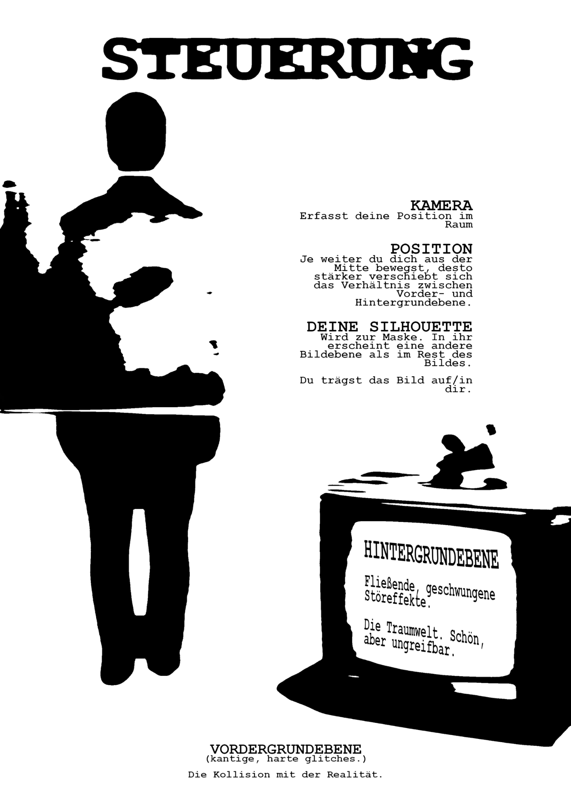
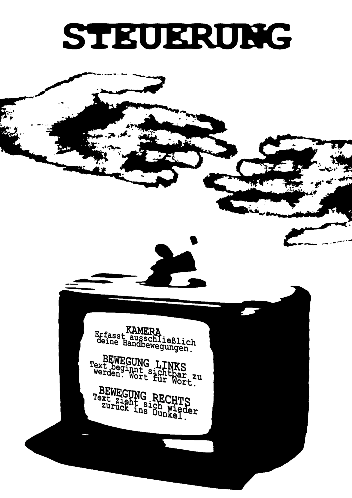
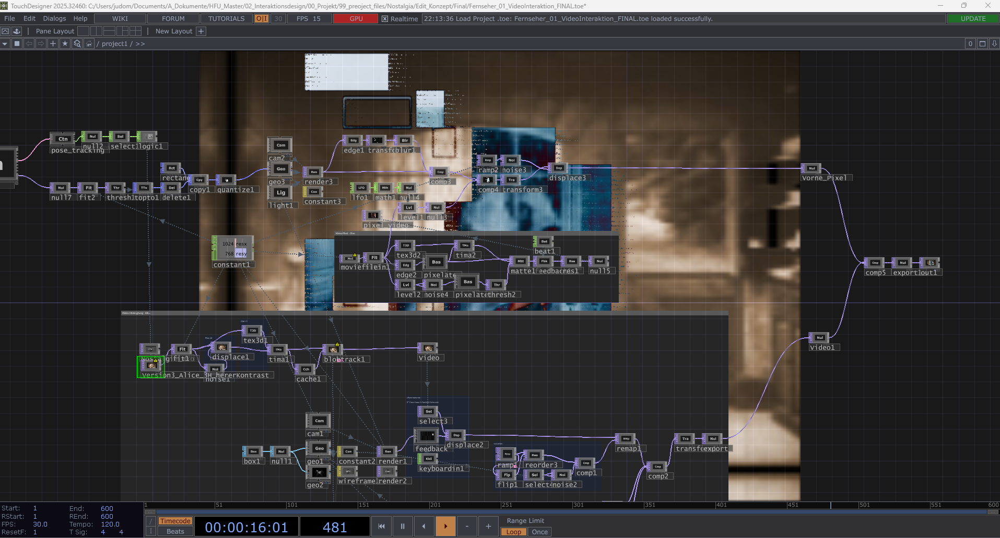
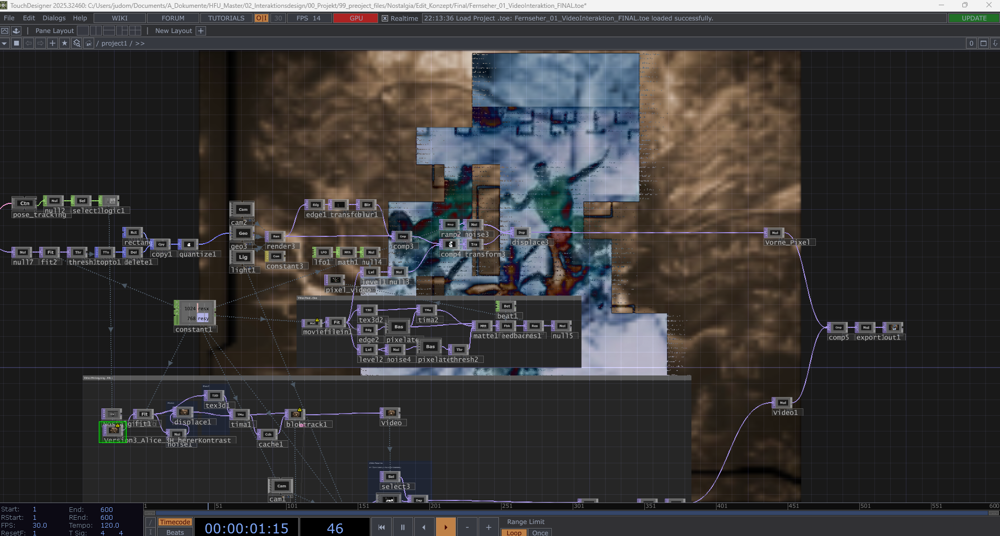
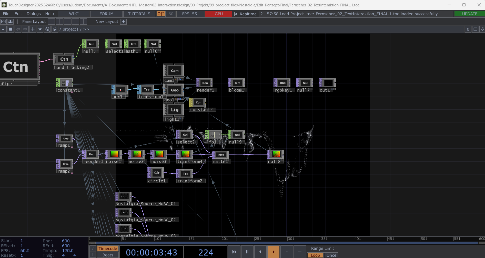
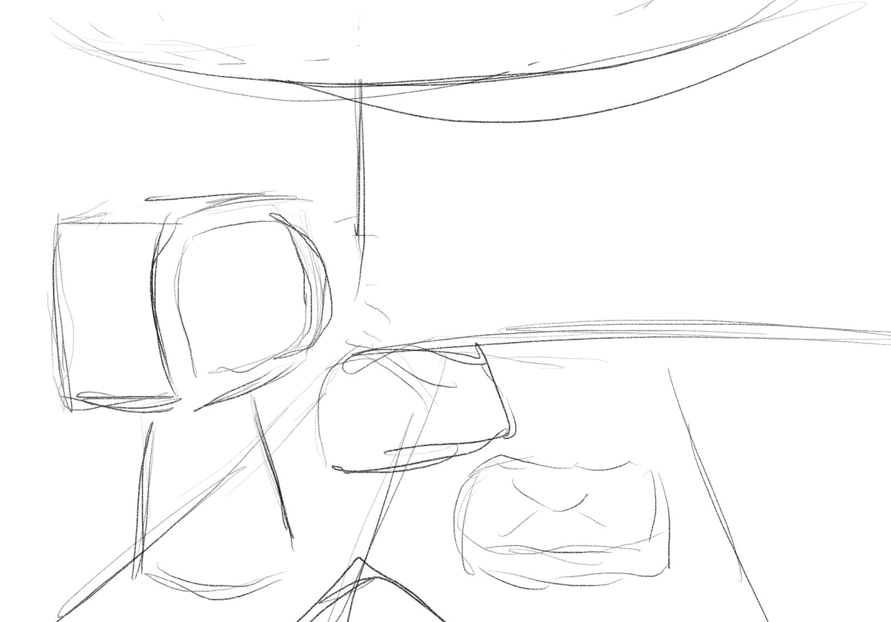
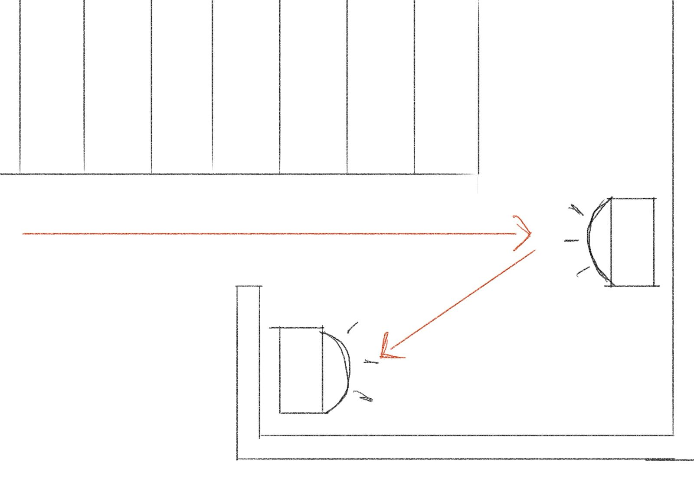
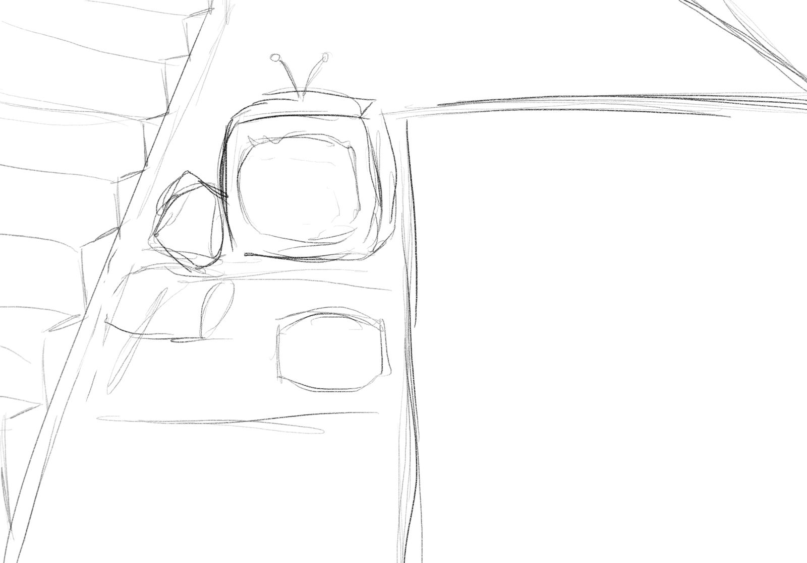

Dieses Dokument zeichnet die Entwicklung des Projekts chronologisch nach — von der ersten Themenfindung über das Brainstorming und die konzeptionelle Zuspitzung bis hin zur finalen Steuerung, der technischen Umsetzung und der Reflexion.
Ein Modul, zwei Ergebnisse
Das Modul ist zweigeteilt: Abgegeben wird eine Dokumentation, ausgestellt wird ein Prototyp in Kooperation mit der Städtischen Galerie Villingen-Schwenningen.
Zur Verfügung stehende Mittel
- Sensoren / Hardware
- Beamer / Display
- Software
- KI / Generative Tools
- Audio / Sound
Das übergeordnete Grundthema durch alle Phasen hindurch: die Schwelle zwischen zwei Zuständen. Liminalität.
Drei Stränge der Liminalität
Im Sprachgebrauch
Der Schwellenzustand zwischen Sprachen, Dialekten und Bedeutungen. Code-Switching, Übersetzungsverluste, Slang als „geheime Tür“. Hohes Interaktionspotenzial durch Spracheingabe und generative Transformation.
In der nationalen Identität
Grenzzonen, Menschen zwischen zwei Kulturen. Politisch und emotional stark aufgeladen — wirkungsvoll, aber konzeptuell anspruchsvoll zu navigieren.
Auf spiritueller Ebene
Übergänge zwischen Leben und Tod, Wachen und Schlaf, Ritual als Schwellenmoment. Archetypisch, sinnlich umsetzbar über Atmosphäre, Klang und Licht — und für Galeriebesucher unmittelbar zugänglich.
Das Materialfeld öffnen
Aus den drei Strängen entstand ein assoziatives Moodboard. Jede Idee folgt einer wiederkehrenden Struktur:
Neben den drei Ausgangsthemen kristallisierten sich weitere emotionale Felder heraus:
- VoidDas Leere, das Unbesetzte („I remember you well in the Chelsea Hotel…“).
- Fall // DepressionDas Kippen, der Sog nach unten.
- Nostalgie // GriefZunächst mit konkretem persönlich-kulturellem Bezug (Kosovo / Albanien, Dhoma e burrave, albanische Instrumente, Kamerafahrten).
- CommunityDas Gemeinschaftliche, z. B. Sunday Church.
- Spirituelle EbeneGebet, Spiegel, Vogel; „inbetween you become nobody. that is the point.“
Ausgewählte Konzeptsätze aus dem Board
„The translation is correct, but something didn’t survive the crossing.“
„Home is a place you can not return to.“
„Seeing yourself in somebody else and being afraid of that reflection.“
„Inbetween you become nobody. That is the point.“
Visuelle Referenzen (Public Domain)
Aus Zeitgründen wurde für die Bildsprache auf Material aus dem Public Domain zurückgegriffen — sogenannte „living pictures“ und frühe Film-Tableaus:
- Magic Roses — Segundo de Chomón
- Birth of the Pearl (1901)
- Alice in Wonderland
- Eros + Massacre (1969) — Yoshishige Yoshida
Von vielen Ideen zur Kernidee
Das Moodboard war ausdrücklich ein erstes Brainstorming — nicht das fertige Konzept. Der nächste Schritt war die Verdichtung auf eine tragende Kernidee.
Die entscheidende Verschiebung. Zunächst lag der stärkste emotionale Kern in der nationalen Nostalgie. In der Auseinandersetzung wurde jedoch eine bewusste Entscheidung getroffen: Der persönliche Bezug wird zugunsten eines allgemeinen Statements über die Vergangenheit losgelassen. Das Thema verschiebt sich von der individuellen Herkunft hin zu einem kollektiven, zeitgenössischen Zustand.
Damit war auch klar: Die Nostalgie sollte nicht als Privatgeschichte erzählt werden, sondern als Mechanismus — das Romantisieren und Verdrängen, das uns alle betrifft.
Liminalität im psychologischen Kontext
Nostalgie als Verdrängungsmechanismus
Im Zentrum steht die Dualität zwischen Sehnsucht und Verdrängung.
Im heutigen Zeitalter wird — vor allem im Kontext sozialer Medien — vieles im Moment Erlebte verdrängt und zu einem späteren Zeitpunkt romantisiert betrachtet, meist durch eine eingefärbte Wahrnehmung. Statt diese Situationen zu verarbeiten oder zu verändern, werden sie lediglich verdrängt und romantisiert. Die emotionale Arbeit, die in diesen „Trauerprozess“ einfließt, hat somit keine Auswirkung auf die Realität.
Thematischer Strang. Ausgehend von der Darstellung Kleopatras soll symbolisiert werden, wie das Annehmen und Akzeptieren dieser Situationen zunächst zu Chaos führt — ein Chaos, das man jedoch loslassen muss, um Struktur zu gewinnen. Es soll gezeigt werden, dass man Unsicherheiten wertschätzen und Geduld lernen kann. So soll wieder Licht hereingelassen werden, das einem den Weg zeigt.
Entgegengesetzt dient die Geschichte von Alice im Wunderland im Hintergrund als romantisierte, kindliche Version desselben Konflikts. Während die Konflikte in Kleopatra angenommen werden und aktiv an einer Veränderung gearbeitet wird, werden sie in Alice im Wunderland verdrängt und in den Hintergrund gezogen. So entsteht eine romantisierte Version der Wirklichkeit.
Der Mensch wird zum Regler
Die Installation arbeitet mit zwei Steuerungsebenen. Beide übersetzen Körper und Bewegung der Besucher:innen unmittelbar in Bild und Text — es gibt keinen Controller, keinen Knopf. Die Anwesenheit selbst ist das Interface.
Steuerung I
Position im Raum
Bildebene: Kleopatra (Vordergrund) & Alice im Wunderland (Hintergrund) — „Gefühle“.
- Kamera
- Erfasst deine Position im Raum.
- Position
- Je weiter du dich aus der Mitte bewegst, desto stärker verschiebt sich das Verhältnis zwischen Vorder- und Hintergrundebene.
- Deine Silhouette
- Wird zur Maske. In ihr erscheint eine andere Bildebene als im Rest des Bildes. Du trägst das Bild auf / in dir.

Steuerung II
Handbewegung
Textebene: Hintergedanke — Worte tauchen auf und ziehen sich zurück.
- Kamera
- Erfasst ausschließlich deine Handbewegungen.
- Bewegung links
- Text beginnt sichtbar zu werden. Wort für Wort.
- Bewegung rechts
- Text zieht sich wieder zurück ins Dunkel.

Räumliche Verortung & User Journey
Die Installation nutzt gefundene, „übriggebliebene“ Orte, die ein Gefühl von Improvisation und Rückzug erzeugen — Zonen, in denen man sich unbeobachtet fühlt.
Mögliche Spots im Raum
- Unter der TreppeDas Gefühl eines Matratzenlagers nachahmen.
- Garderobe2–3 Garderoben, mit Sheets / Tüchern abgehängt.
- Die EckeEin zurückgezogener, halb verborgener Ort.
Ablauf der User Journey
- Der Rezipient betritt den Raum.
- Aufmerksamkeit wird durch das Bildschirmlicht erzeugt.
- Der Rezipient folgt der Anweisung auf dem Screen.
- Der Rezipient verlässt den Space.
Zwei Projekte, zwei Fernseher
Das Thema wird über zwei eigenständige TouchDesigner-Projekte umgesetzt, die auf zwei verschiedene Fernseher gestreamt werden. Für die Ausstellung „Liminalität“ in Zusammenarbeit mit der Städtischen Galerie stehen die beiden Ausspielgeräte jeweils vor dem Ausgang eines Aufzugs.
Erdgeschoss · Fernseher 1
Zwei Videoebenen stellen das Verhältnis zwischen Erinnerung und Romantisierung dar.
1. Obergeschoss · Fernseher 2
Nach dem Aufzug folgt ein Text, gesteuert durch Handbewegungen: Erinnerungen sind oft nur romantisierte Versionen der Vergangenheit — man redet sie sich schön, um zu verdrängen, woran man sich nicht erinnern möchte. Hier soll die Dualität erst richtig verstanden und getragen werden.
Hardware
- KameraErfasst Position im Raum bzw. Handbewegung als Eingabe.
- Zwei alte FernsehgeräteCRT-Displays als Ausgabe, je vor einem Aufzugsausgang platziert — Teil der nostalgischen Bildsprache.
- RechnerEchtzeit-Verarbeitung der beiden TouchDesigner-Projekte.
Software
- TouchDesignerZwei Projekte: Auswertung des Trackings, Echtzeit-Bild, Videoebenen, Glitch / Distortion und die textbasierte Interaktion.
Pipeline
Die Ausgabe reagiert in Echtzeit auf Position bzw. Handbewegung der Besucher:innen — je nach Fernseher verschiebt sich das Verhältnis der Videoebenen oder tritt der Text Wort für Wort hervor.
Die Projekte in TouchDesigner
Beide Installationen entstehen in TouchDesigner. Kameratracking steuert in Echtzeit, was auf dem jeweiligen Fernseher zu sehen ist.
Fernseher 1 · Erdgeschoss — Videointeraktion
Zwei Videoebenen bilden das Verhältnis von Erinnerung und Romantisierung ab; Position und Bewegung der Besucher:innen verschieben ihr Zusammenspiel.


Fernseher 2 · 1. Obergeschoss — Textinteraktion
Handbewegungen lassen den Text erscheinen und wieder verschwinden. Er macht die romantisierte Erinnerung und ihre Verdrängung bewusst — die Dualität wird hier getragen.

Bildmaterial: von der KI-Idee zu Archive.org
Ursprünglich sollte die nostalgische Stimmung mit KI-generierten Videos erzeugt werden. Aus Kostengründen wurde diese Idee verworfen; stattdessen wurde zunächst auf gemeinfreies Material von Archive.org zurückgegriffen. Die dafür vorbereiteten Prompts:
Einstellungen (Midjourney): --ar 4:3 --style raw --v 6
Design & Aufbau
Von der visuellen Sprache der Plakate bis zur Platzierung im Raum wurde die Inszenierung Schritt für Schritt entwickelt.
Design-Inspiration
Beim Design der Projekt- und Steuerungsplakate haben wir uns am Look von Sonic Battle 2 orientiert — hoher Kontrast, kräftige Typografie und grafische Schwarz-Weiß-Flächen.


Raumskizzen
Erste Skizzen zur Platzierung der Displays und zum Weg der Besucher:innen durch den Raum.



Erste Aufbau-Tests
Erste Tests des Aufbaus mit verschiedenen Displays.

Finales Design
Die finalen Plakate: das Titelplakat und die beiden Steuerungsplakate.

Was wir mitnehmen
Rückblickend liegt die wichtigste Erkenntnis im Timing: Der erste ernsthafte Test mit echten Nutzer:innen kam spät. Vieles, was sich erst im Ausprobieren zeigt, hätte den Prototyp früher formen können.
Was gut funktioniert hat
Die Grundidee, den Körper selbst zum Regler zu machen — ohne Controller, ohne Knopf — erwies sich als tragfähig: Die Schwelle zwischen Anwesenheit und Bild wird unmittelbar erfahrbar. Auch die visuelle Identität aus Portal-Motiv, CRT-Ästhetik und der Dualität von Kleopatra und Alice gab dem Projekt einen klaren, wiedererkennbaren Rahmen.
Was wir nächstes Mal anders machen würden
- Früher testenNutzer:innen-Tests von Beginn an einplanen, statt erst am Ende.
- Auf alten GerätenDie Installation früh auf der tatsächlichen, älteren Hardware prüfen — nicht nur am Entwicklungsrechner.
- Inhalte vergleichenVerschiedene Video- und Bildinhalte gegeneinander testen, um die stärkste Wirkung zu finden.
- ReaktionszeitenLatenzen in TouchDesigner früh messen und die Pipeline bei Bedarf überarbeiten, damit die Interaktion unmittelbar bleibt.
- IterierenAus jedem User-Test konkrete Änderungen ableiten und den Prototyp in Schleifen weiterentwickeln.
Liminalität
Der Aufbau.